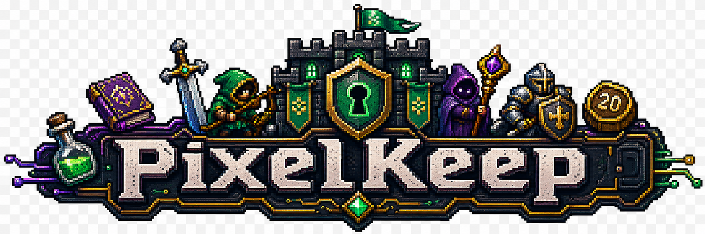
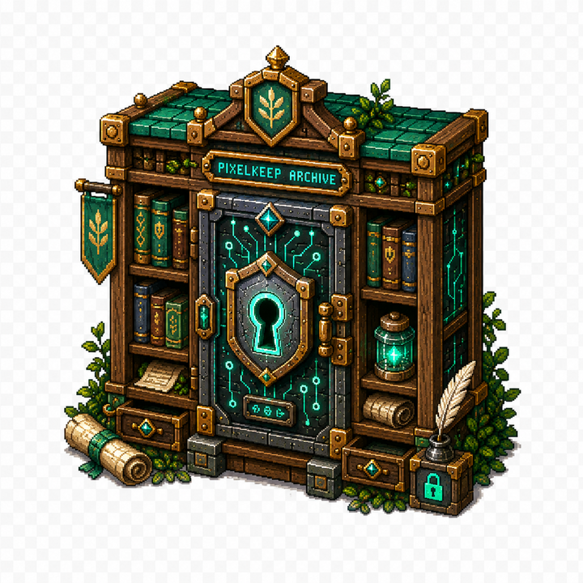
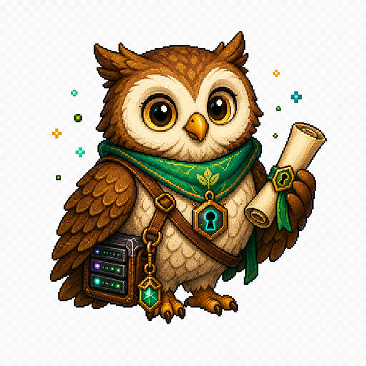
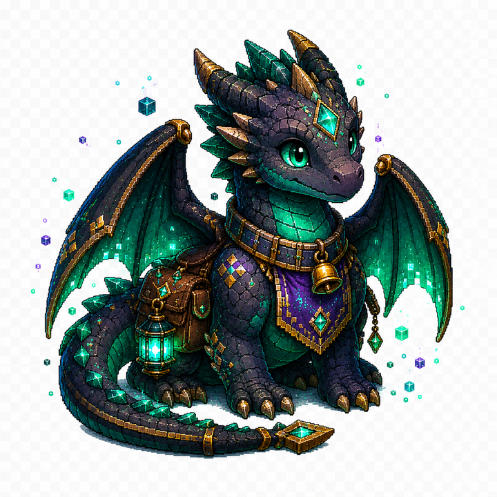
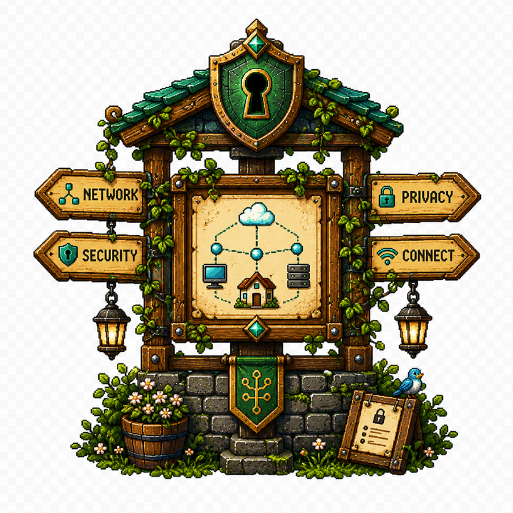

TECH
Cloud, platform engineering, enterprise architecture, automation, patterns en tooling.
Retro fantasy tech keep
Een persoonlijke keep voor IT, privacy, homelab, retro games en RPG/fantasy. Geen tracker-rommel. Geen externe dependencies. Gewoon statisch, snel en hostbaar op GitHub Pages.
boot keep-gate... OK mount /homelab... OK enable privacy-shield... OK load retro sprites... OK status: forge in progress
Roadmap
Cloud, platform engineering, enterprise architecture, automation, patterns en tooling.
Privacy-by-design, self-hosting, dataminimalisatie, zero-trust en security controls.
Servers, containers, GitOps, monitoring, storage, backups en eigen beheer.
Amiga, C64, SNES/NES, retro workflows, pixel art, emulatie en gaming cultuur.
Fantasy, worldbuilding, tabletop/RPG, Magic-vibes, characters, items en lore.
PixelKeep-logo’s, mascots, banners, web-assets en terminal/ANSI art.
Style direction
Donkere fantasy-tech stijl met een demoscene-knipoog: scanlines, pixel glow, terminal vibes en een chiptune-loop die pas start na een klik. Browsers blokkeren autoplay audio standaard.

Asset forge







Terminal extras
De repo bevat ook ASCII- en ANSI-banners in assets/ascii-banner.txt en assets/ansi-banner.ans.
____ _ _ _ __
| _ \(_)_ _____| | |/ /___ ___ _ __
| |_) | \ \/ / _ \ | ' // _ \/ _ \ '_ \
| __/| |> < __/ | . \ __/ __/ |_) |
|_| |_/_/\_\___|_|_|\_\___|\___| .__/
|_|